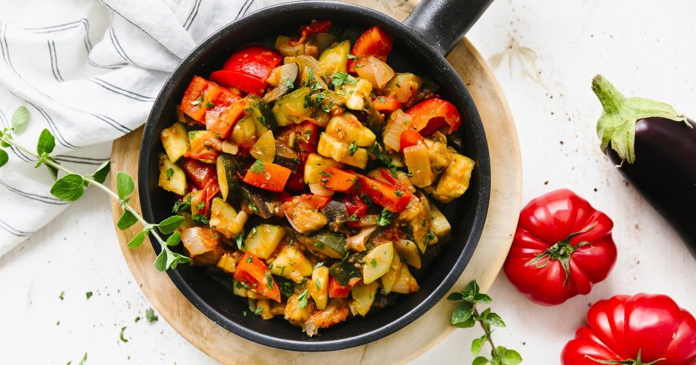
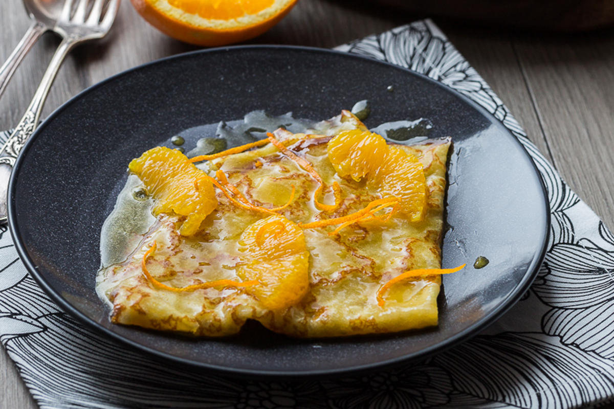

Recettes de la France
Découvrez les délices de la cuisine française avec nos recettes traditionnelles et modernes.
Bœuf Bourguignon

Description : Ce plat emblématique de la cuisine bourguignonne est un ragoût de bœuf mijoté dans du vin rouge avec des carottes, des oignons, des champignons et des lardons. Un repas chaleureux et savoureux parfait pour les journées fraîches.
Ingrédients :
- 1 kg de bœuf (paleron ou gîte)
- 750 ml de vin rouge (Bourgogne)
- 2 carottes, coupées en rondelles
- 1 oignon, émincé
- 200 g de lardons
- 150 g de champignons de Paris, émincés
- 2 gousses d'ail, hachées
- Thym et laurier
- Sel, poivre
Instructions :
- Préparer la marinade : Faire mariner le bœuf avec le vin rouge, le thym, le laurier, les carottes et les oignons pendant plusieurs heures ou toute la nuit.
- Saisir la viande : Égoutter le bœuf et le faire revenir dans une cocotte avec les lardons jusqu'à ce qu'il soit doré.
- Ajouter les légumes : Ajouter les carottes, les oignons et l'ail. Faire revenir quelques minutes.
- Mijoter : Verser la marinade avec le vin, couvrir et laisser mijoter 2 à 3 heures à feu doux.
- Ajouter les champignons : Ajouter les champignons 30 minutes avant la fin de la cuisson.
- Servir : Rectifier l'assaisonnement et servir chaud avec des pommes de terre ou des pâtes.
Quiche Lorraine

Description : La *Quiche Lorraine* est une tarte salée originaire de Lorraine, garnie de lardons et d'une préparation à base d'œufs et de crème. Un classique de la cuisine française, idéal pour les pique-niques et repas conviviaux.
Ingrédients :
- 1 pâte brisée
- 200 g de lardons
- 3 œufs
- 200 ml de crème fraîche
- 100 ml de lait
- Sel, poivre, noix de muscade
Instructions :
- Préchauffer le four : Préchauffer le four à 180 °C.
- Préparer la garniture : Dans une poêle, faire revenir les lardons jusqu'à ce qu'ils soient dorés. Dans un bol, mélanger les œufs, la crème, le lait, le sel, le poivre et la muscade.
- Assembler : Étaler la pâte dans un moule à tarte. Disposer les lardons sur le fond de tarte, puis verser la préparation aux œufs par-dessus.
- Cuire : Enfourner et cuire pendant 35 à 40 minutes, jusqu'à ce que la quiche soit dorée.
- Servir : Servir tiède ou à température ambiante.
Ratatouille

Description : Ce plat provençal à base de légumes d'été mijotés comme les tomates, courgettes, poivrons et aubergines est un accompagnement parfait ou un plat végétarien savoureux.
Ingrédients :
- 2 tomates
- 1 courgette
- 1 poivron rouge
- 1 aubergine
- 1 oignon
- 2 gousses d'ail
- Thym et laurier
- Sel, poivre, huile d'olive
Instructions :
- Préparer les légumes : Couper tous les légumes en dés.
- Faire revenir : Dans une grande poêle, faire chauffer l'huile d'olive et faire revenir l'oignon et l'ail. Ajouter ensuite les poivrons, l'aubergine et les courgettes.
- Ajouter les tomates : Ajouter les tomates et les herbes, puis assaisonner.
- Mijoter : Couvrir et laisser mijoter à feu doux pendant environ 30 minutes, en remuant de temps en temps.
- Servir : Servir chaud ou froid en accompagnement.
Crêpes Suzette

Description : Les *Crêpes Suzette* sont des crêpes fines servies avec une sauce au beurre, sucre, jus d'orange et liqueur, souvent flambées pour une touche spectaculaire.
Ingrédients :
- 125 g de farine
- 2 œufs
- 250 ml de lait
- 20 g de beurre fondu
- Pour la sauce : 100 g de beurre, 100 g de sucre, 2 oranges (zeste et jus), 50 ml de Grand Marnier ou Cointreau
Instructions :
- Préparer la pâte : Mélanger la farine, les œufs, le lait et le beurre fondu pour obtenir une pâte lisse.
- Cuire les crêpes : Faire chauffer une poêle et cuire les crêpes une par une.
- Préparer la sauce : Dans une poêle, faire fondre le beurre avec le sucre, ajouter le zeste et le jus d'orange, puis la liqueur.
- Flamber : Ajouter les crêpes dans la sauce et flamber pour un effet spectaculaire (optionnel).
- Servir : Servir les crêpes chaudes nappées de sauce.